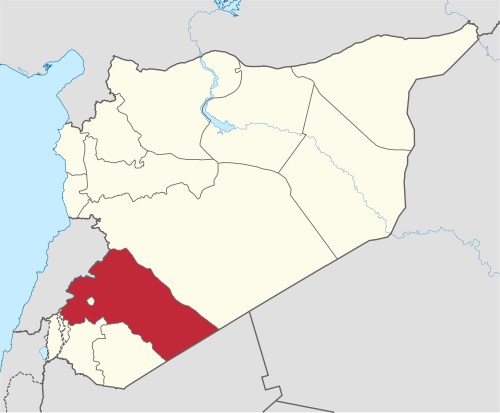

محافظة ريف دمشق

:عنها
- .تمتد المحافظة لتحيط بمحافظة دمشق العاصمة بشكل شبه دائري
- .لمساحة الكلية: 18.018 ألف كم2، تتضمن: 9 مناطق، 27 ناحية، 28 مدينة، 190 قرية
- .وتمتاز المحافظة بتنوع التضاريس والطبيعة بين السهول والسهوب والجبال العالية والوديان
quneitra on the map